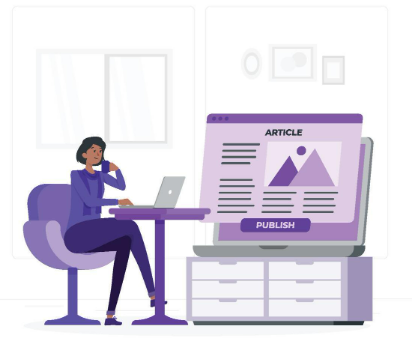

CMS
Headless VS tradisjonell CMS
CMS står for content managment system. Dette systemet hjelper å organisere og administrere innhold på en nettside. Det gjør det enklere å publisere og redigere innhold, samt enklere å vedlikeholde det (guilty, 2019). De to hovedtypene med CMS er headless og tradisjonell. Denne artikkelen handler om hva disse to typene er, og hva som skiller dem fra hverandre.
Headless CMS fokuserer kun på innholdet til en nettside (uDig, u.å). Når innholdet er ferdig redigert, blir det lagt ut på en API. API står for Application programming interface. API blir brukt til å overføre innhold mellom flere systemer og apper, slik at man slipper å gjøre det selv (Skjørten, 2022). Det er en fordel å bruke denne hvis man har mye informasjon man vil dele på mange forskjellige plattformer. Eksempel på headless CMS er contentstack.(uDig, u.å)
Måten tradisjonell CMS fungerer på er at den kobler front delen og bak delen av en nettside. Det betyr at hele nettsiden bruker kun ett system. Alt fra innhold til publisering. Det er best å bruke denne typen CMS når innholdet ikke skal deles på mange forskjellige plattformer, og man kanskje bare er en liten bedrift med kun en nettside. Eksempel på tradisjonell CMS er Wordpress og Drupal.(uDig, u.å)
CMS er en god og enkel måte å redigere, administrere innhold på. Hvilken type CMS man bruker er avhengig av hvordan man vil publisere innholdet, og om man vil gjøre det under samme system der man redigere det.